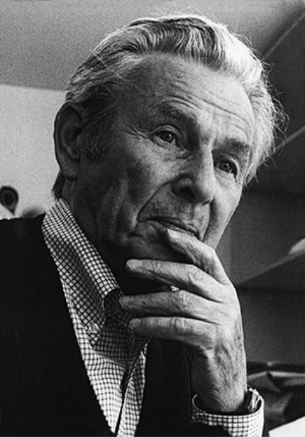

스위스 그래픽디자인의 아버지
JosefMuller-Brockmann
Swiss,1914–1996
그는 매우 비좁은 공간에서 8남매가 함께 살았음에도 불구하고
자신의 어린시절을 아름다웠다고이야기한다.
자신의 어린시절을 아름다웠다고이야기한다.
요제프 뮐러 브로크만은 1914년 5월 9일 혼란 속에서 태어났고, 부모인 Ida Schmucki, Christian Mullar와 8남매 가정 속에서 자랐다.
가족은 스위스 Rapperswill에 위치한 다른 집들과 떨어져 있는 큰 주택에서 살았다. 세계 1차 대전의 오스트리아–헝가리 전에 합류한
요제프 뮐러브로크만의 아버지인 Christian Mullar는 얼마 후 세상을 떠났고, 아버지의 부재는 곧 뮐러 가정의 경제적 위기를 불러 일으켰다.
결국 남은 가족들은 모두 요제프 어머니의 집으로 이사가게 된다.
그는 목초지와 들판으로 나가서 놀거나 강과 호수에서 수영을 하거나 바위와 산을 올랐다. 중학생 때부터 뮐러의 예술적인 재능을 드러나기 시작했다. 그는 학교 신문을 위해 일러스트레이션을 작업을 했다. 중학생 기간 동안 뮐러는 지속적으로 미술과 수학에 있어서 높은 점수를 얻었다. 고등학교를 졸업하고 뮐러는 대학교를 갈 수 있는 자격이 곧바로 있지는 않았다. 그대신 그는 포토그래퍼와 일러스트레이터로 두 곳에서 견습을 했다. 두 직업 모 두 뮐러는 재미없게 여겼음에도 불구하고 그는 그의 재능을 최대로 발휘했다. 졸업 2개월 후, 그는 포스터와 관광 관련 그래픽 디자이너인 Alex Walter Diggelmann의 견습생으로 일하게 되었다.
뮐러의 작업실인 Studio Diggelmann에서의 2년 동안 그는 다양한 타이포그래피와 그래픽 디자인의 요소에 대해 습득할 수 있었다. 그는 작업에 있어서 이미지와 그래픽의 사용 방법에 대해 더 깊이 이해했으며, 출판물의 종류에 따라 어떤 스타일의 폰트를 사용해야 하는지 익힐 수 있었다. 1933년, 뮐러는 스튜디오를 떠났다. 그 후 뮐러는 직업을 찾는데 어려움을 겪었다. 전 세계를 뒤덮었던 경제침체로 인해 많은 사람들이 일시 해고되었다. 뮐러는 일을 찾는 대신 1933년의 남은 반년을 Kunstgewerbeschule에서 공부하기로 결정했다. Kunstgewerbeschule은 유럽에서 그래픽 디자인으로 매우 알아주는 교육기관이었다. 그곳에 입학하기 위해서는 두 차례의 입학 시험을 거쳐야만 했다. 뮐러는 입학 시험을 통과하지 못했을 뿐만 아니라 프로그램에 참여할 수 있는 승인 또는 어떠한 자격도 받지 못했다. 그럼에도 불구하고 그는 매일 에른스트 켈러의 그래픽 디자인 수업에 나타났으며 결국 강의에 참여할 수 있다는 허락을 받았다.
1938년 뮐러는 Mause Seeds Ltd에서 주최한 공모전에 그의 작업들을 제출했다. 그 결과 Mause Seeds Ltd에서 그에게 쇼윈도의 상품 진열 시리즈 작업을 의뢰했고 이후 여러 작업에 대한 의뢰가 들어왔다. 쇼윈도 상품 진열 시리즈 작업은 뮐러의 작업이 대중에게 공개된 첫번째 작업이자 그의 상업 디자이너로서의 평판을 다지는데 도움을 주었다. 얼마 후, 뮐러는 취리히에 개인 작업실을 열었다. 이 작업실은 많은 예술가, 그래픽 디자이너 그리고 포토그래퍼들을 수용했다. 뿐만 아니라 뮐러의 작업실은 독일의 지독한 통치로부터 도망한 사람들에게 안전한 피난처 역할을 하기도 했다. 1937년 뮐러는 두개의 단체, Verbandes Schweizer Grafiker와 Schweizer Werkbend에게 인지되었다. 두 단체 모두 높이 평가되었으며 주로 디자인과 포토그래피에 집중했다. 이러한 단체에 가입함으로써 뮐러는 자신의 작업에 대한 관점을 더욱 키워나갈 수 있었 다. 그는 자신이 지닌 재능을 믿게 되었으며 자신감을 얻었다. 1939년 뮐러는 112번째 Mountain Division의 Battalion에서 공식적으로 세계 2차 대전에 중위로 입대했다. 그는 스위스의 산악지대에서 적은 규모의 군인들을 이끌었다. 엄밀히 말하면 전쟁에 참여했음에도 불구하고 실제 전투는 거의 하지 않았다. 스위스는 세계 2차 대전 동안 중립적인 입장을 취했기 때문에 근본적으로 다른 나라들로부터 분리되었다. 때문에 스위스의 시민들은 나날의 일상을 살아갈 수 있었다.
이 시기에 뮐러는 그의 아내인 Verena Brockmann을 만났다. 그녀는 지적이고 훌륭한 바이올린 연주자였다. 그들은 뮐러의 절친한 친구인 Verena의 아버지를 통해 만나게 되었고 1943년 3월, 뮐러와 Verena는 결혼했다. 얼마 후 뮐러는 아내의 이름을 가져오는 스위스의 전통을 따라서 이름을 뮐러브로크만으로 바꿨다. 1945년 5월, 세계 2차 대전이 끝나면서 뮐러브로크만은 군에서 제대했다. 이러한 해방과 함께 뮐러브로크만은 그래픽 디자이너로서의 꿈을 더 키워갈 수 있는 새로운 아이덴티티를 찾고자 했다.
1957년 취리히 예술공예학교의 새 교장으로 부임한 한스 피쉴리는 브로크만을 그래픽 디자인학과 학과장으로 임명했다. 뮐러브로크만은 이 학과의 커리클럼에 일반 교양과목을 포함시키기 위해 학과장으로 임명되었다. 1930년대의 선구적인 디자이너 에른스트 켈러의 계승자로서, 브로크만은 실기에 중점을 둔 교수법을 도입하고, 디자인의 기반으로서 1년간의 기초과정을 신설 했다. 그는 또한 사진학과의 학과장으로 한스 핀슬러를 영입하는 데도 성공했다. 브로크만은 1960년에 취리히의 교수직을 사임했다. 학교 내부에서의 갈등이 급진적인 개혁을 원하는 그에게 방해가 되었기 때문이었다. 또한 그의 가장 큰 후원자였던 교장 한스 피쉴리도 교육정책에 대한 내부의 갈등을 제대로 조정하지 못한 데 대한 책임을 지고 함께 사임했다. 1960년대에서 1970년대까지 뮐러브로크만은 계속해서 전세계적으로 명성을 떨쳤다. 1964년 가을, 뮐러브로크만이 아들과 함께 여행을 하고 있는 도중, 아내의 교통사고 소식을 듣게 된다. 뮐러브로크만과 그의 아내가 몇 해 동안 떨어져 지냈음에도 불구하고 그녀의 갑작스러운 죽음은 뮐러브로크만에게 큰 슬픔을 안겨주었다.
뮐러 브로크만은 마지막까지 다양한 종류의 작업을 남겼다. 새로운 작업을 했을 뿐만 아니라 그는 개인 전시를 주최하기 위해 앞장서기도 했다. 나이가 들어가면 서 그는 그의 엄격했던 디자인 철학이 다소 약화되었다. 그는 점차 표현적이고 일러스트적인 스타일로 변화된 작업을 했다. 1986년과 1994년, 뮐러브로크만은 취리히의 Kunsthaus를 위한 포스터들을 제작한다. 이 포스터들은 다다 예술 운동가 멤버들의 작품 전시회를 홍보했다. Hans Arp, Hugo Ball의 작업을 홍보하 기 위해 제작된 포스터는 포토그래피, 밝고 강렬한 색상, 타이포그래픽 그리드 그리고 일러스트레이션을 활용하여 디자인 했다.
1990년에서 1995년 사이 뮐러브로크만은 북미와 남미를 여러 차례 여행했다. 이 기간 동안 그는 매우 극심하게 질병을 앓았으나 질병이 그를 멈추게 하지 않았 다. 대륙을 여행하며 뮐러브로크만은 자신의 작업에 관한 강의를 했다. 얼마 지나지 않아 뮐러브로크만은 그의 상태를 충분히 자각할 수 있었다. 장암으로 진단을 받은 뮐러브로크만은 질병으로 인해 걷는 것조차 힘들어졌다. 1996년 8월 30일, 수술 후 얼마 지나지 않아 뮐러 브로크만은 그래픽 디자이너로서 영구적인 인상을 남긴채 세상을 떠났다.
그는 목초지와 들판으로 나가서 놀거나 강과 호수에서 수영을 하거나 바위와 산을 올랐다. 중학생 때부터 뮐러의 예술적인 재능을 드러나기 시작했다. 그는 학교 신문을 위해 일러스트레이션을 작업을 했다. 중학생 기간 동안 뮐러는 지속적으로 미술과 수학에 있어서 높은 점수를 얻었다. 고등학교를 졸업하고 뮐러는 대학교를 갈 수 있는 자격이 곧바로 있지는 않았다. 그대신 그는 포토그래퍼와 일러스트레이터로 두 곳에서 견습을 했다. 두 직업 모 두 뮐러는 재미없게 여겼음에도 불구하고 그는 그의 재능을 최대로 발휘했다. 졸업 2개월 후, 그는 포스터와 관광 관련 그래픽 디자이너인 Alex Walter Diggelmann의 견습생으로 일하게 되었다.
뮐러의 작업실인 Studio Diggelmann에서의 2년 동안 그는 다양한 타이포그래피와 그래픽 디자인의 요소에 대해 습득할 수 있었다. 그는 작업에 있어서 이미지와 그래픽의 사용 방법에 대해 더 깊이 이해했으며, 출판물의 종류에 따라 어떤 스타일의 폰트를 사용해야 하는지 익힐 수 있었다. 1933년, 뮐러는 스튜디오를 떠났다. 그 후 뮐러는 직업을 찾는데 어려움을 겪었다. 전 세계를 뒤덮었던 경제침체로 인해 많은 사람들이 일시 해고되었다. 뮐러는 일을 찾는 대신 1933년의 남은 반년을 Kunstgewerbeschule에서 공부하기로 결정했다. Kunstgewerbeschule은 유럽에서 그래픽 디자인으로 매우 알아주는 교육기관이었다. 그곳에 입학하기 위해서는 두 차례의 입학 시험을 거쳐야만 했다. 뮐러는 입학 시험을 통과하지 못했을 뿐만 아니라 프로그램에 참여할 수 있는 승인 또는 어떠한 자격도 받지 못했다. 그럼에도 불구하고 그는 매일 에른스트 켈러의 그래픽 디자인 수업에 나타났으며 결국 강의에 참여할 수 있다는 허락을 받았다.
1938년 뮐러는 Mause Seeds Ltd에서 주최한 공모전에 그의 작업들을 제출했다. 그 결과 Mause Seeds Ltd에서 그에게 쇼윈도의 상품 진열 시리즈 작업을 의뢰했고 이후 여러 작업에 대한 의뢰가 들어왔다. 쇼윈도 상품 진열 시리즈 작업은 뮐러의 작업이 대중에게 공개된 첫번째 작업이자 그의 상업 디자이너로서의 평판을 다지는데 도움을 주었다. 얼마 후, 뮐러는 취리히에 개인 작업실을 열었다. 이 작업실은 많은 예술가, 그래픽 디자이너 그리고 포토그래퍼들을 수용했다. 뿐만 아니라 뮐러의 작업실은 독일의 지독한 통치로부터 도망한 사람들에게 안전한 피난처 역할을 하기도 했다. 1937년 뮐러는 두개의 단체, Verbandes Schweizer Grafiker와 Schweizer Werkbend에게 인지되었다. 두 단체 모두 높이 평가되었으며 주로 디자인과 포토그래피에 집중했다. 이러한 단체에 가입함으로써 뮐러는 자신의 작업에 대한 관점을 더욱 키워나갈 수 있었 다. 그는 자신이 지닌 재능을 믿게 되었으며 자신감을 얻었다. 1939년 뮐러는 112번째 Mountain Division의 Battalion에서 공식적으로 세계 2차 대전에 중위로 입대했다. 그는 스위스의 산악지대에서 적은 규모의 군인들을 이끌었다. 엄밀히 말하면 전쟁에 참여했음에도 불구하고 실제 전투는 거의 하지 않았다. 스위스는 세계 2차 대전 동안 중립적인 입장을 취했기 때문에 근본적으로 다른 나라들로부터 분리되었다. 때문에 스위스의 시민들은 나날의 일상을 살아갈 수 있었다.
이 시기에 뮐러는 그의 아내인 Verena Brockmann을 만났다. 그녀는 지적이고 훌륭한 바이올린 연주자였다. 그들은 뮐러의 절친한 친구인 Verena의 아버지를 통해 만나게 되었고 1943년 3월, 뮐러와 Verena는 결혼했다. 얼마 후 뮐러는 아내의 이름을 가져오는 스위스의 전통을 따라서 이름을 뮐러브로크만으로 바꿨다. 1945년 5월, 세계 2차 대전이 끝나면서 뮐러브로크만은 군에서 제대했다. 이러한 해방과 함께 뮐러브로크만은 그래픽 디자이너로서의 꿈을 더 키워갈 수 있는 새로운 아이덴티티를 찾고자 했다.
1957년 취리히 예술공예학교의 새 교장으로 부임한 한스 피쉴리는 브로크만을 그래픽 디자인학과 학과장으로 임명했다. 뮐러브로크만은 이 학과의 커리클럼에 일반 교양과목을 포함시키기 위해 학과장으로 임명되었다. 1930년대의 선구적인 디자이너 에른스트 켈러의 계승자로서, 브로크만은 실기에 중점을 둔 교수법을 도입하고, 디자인의 기반으로서 1년간의 기초과정을 신설 했다. 그는 또한 사진학과의 학과장으로 한스 핀슬러를 영입하는 데도 성공했다. 브로크만은 1960년에 취리히의 교수직을 사임했다. 학교 내부에서의 갈등이 급진적인 개혁을 원하는 그에게 방해가 되었기 때문이었다. 또한 그의 가장 큰 후원자였던 교장 한스 피쉴리도 교육정책에 대한 내부의 갈등을 제대로 조정하지 못한 데 대한 책임을 지고 함께 사임했다. 1960년대에서 1970년대까지 뮐러브로크만은 계속해서 전세계적으로 명성을 떨쳤다. 1964년 가을, 뮐러브로크만이 아들과 함께 여행을 하고 있는 도중, 아내의 교통사고 소식을 듣게 된다. 뮐러브로크만과 그의 아내가 몇 해 동안 떨어져 지냈음에도 불구하고 그녀의 갑작스러운 죽음은 뮐러브로크만에게 큰 슬픔을 안겨주었다.
뮐러 브로크만은 마지막까지 다양한 종류의 작업을 남겼다. 새로운 작업을 했을 뿐만 아니라 그는 개인 전시를 주최하기 위해 앞장서기도 했다. 나이가 들어가면 서 그는 그의 엄격했던 디자인 철학이 다소 약화되었다. 그는 점차 표현적이고 일러스트적인 스타일로 변화된 작업을 했다. 1986년과 1994년, 뮐러브로크만은 취리히의 Kunsthaus를 위한 포스터들을 제작한다. 이 포스터들은 다다 예술 운동가 멤버들의 작품 전시회를 홍보했다. Hans Arp, Hugo Ball의 작업을 홍보하 기 위해 제작된 포스터는 포토그래피, 밝고 강렬한 색상, 타이포그래픽 그리드 그리고 일러스트레이션을 활용하여 디자인 했다.
1990년에서 1995년 사이 뮐러브로크만은 북미와 남미를 여러 차례 여행했다. 이 기간 동안 그는 매우 극심하게 질병을 앓았으나 질병이 그를 멈추게 하지 않았 다. 대륙을 여행하며 뮐러브로크만은 자신의 작업에 관한 강의를 했다. 얼마 지나지 않아 뮐러브로크만은 그의 상태를 충분히 자각할 수 있었다. 장암으로 진단을 받은 뮐러브로크만은 질병으로 인해 걷는 것조차 힘들어졌다. 1996년 8월 30일, 수술 후 얼마 지나지 않아 뮐러 브로크만은 그래픽 디자이너로서 영구적인 인상을 남긴채 세상을 떠났다.